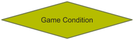
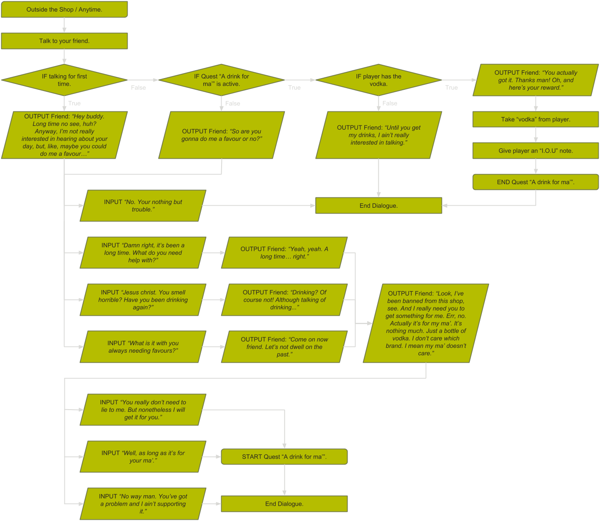

Writing Quests
When writing a story with branching paths it is best to plan first. Understanding what the story is first is a necessity, however this page will not go over that. Instead, this page will be for explaining the process of turning a branching story idea into a proper plan.
Drawing flow charts is a good way planning out a branching story. The table below contains all of the boxes I use when drawing these flow charts
| Box Type | Box Purpose |
|---|---|
This box is for describing what location the player is in and at what time. |
|
 |
This box is used for describing a player input or a games output. |
|  | This box is for in-game conditionals, namely if statements. |
 |
This box indicates whether a quest has started or finished. |
This box describes an action the game or player has to do in order to continue. |
The following is a flowchart showing a simple quest which has been made using the rules from the table above. The arrows show the direction of time.

In that example there are two locations and three NPC’s. Each NPC requires a flowchart for every location they are in. In this example, the NPC’s do not change location, so they will only require one flowchart each.
The following is a flowchart for dialogue with the players friend outside of the shop.
